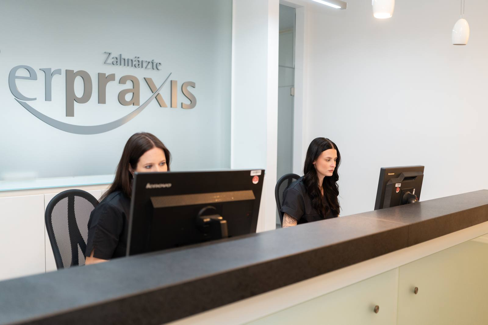
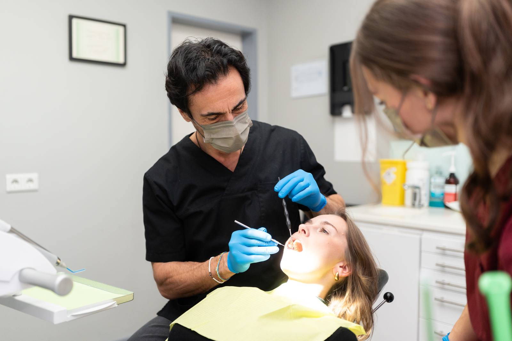
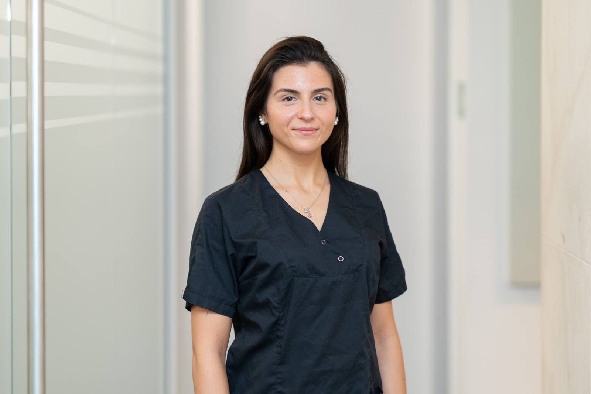

Startseite / Leistungen / Prophylaxe
Professionelle Zahnreinigung in Düsseldorf & Kempen
Vorbeugen ist besser als reparieren: Mit regelmäßiger Prophylaxe bleiben Ihre Zähne und Ihr Zahnfleisch langfristig gesund.

Vorbeugen ist besser als reparieren: Mit regelmäßiger Prophylaxe bleiben Ihre Zähne und Ihr Zahnfleisch langfristig gesund.
Regelmäßige professionelle Zahnreinigung – das Intervall stimmen wir auf Ihr persönliches Risiko ab.
Privatleistung – viele gesetzliche Krankenkassen bezuschussen die PZR ganz oder teilweise.
Beugt Karies und Parodontitis wirksam vor und hilft, dass auch Zahnersatz lange hält.
Prophylaxe ist die vorbeugende Zahnmedizin – ihr wichtigster Baustein ist die professionelle Zahnreinigung, kurz PZR. Dabei entfernen wir alle harten und weichen Beläge sowie bakterielle Auflagerungen: in den Zahnzwischenräumen, am Zahnfleischrand und an erreichbaren Wurzeloberflächen, also genau dort, wo die Zahnbürste nicht hinkommt. Das Wirkprinzip ist einfach: Karies und Parodontitis entstehen durch Bakterien, die sich in Belägen (Plaque) organisieren. Wird dieser Biofilm regelmäßig gestört und entfernt, sinkt das Erkrankungsrisiko deutlich.
Gearbeitet wird mit Ultraschall und Handinstrumenten, mit einem Pulver-Wasser-Strahl für weiche Verfärbungen sowie mit einer abschließenden Politur und Fluoridierung. Das unterscheidet die PZR von der Zahnsteinentfernung, die die gesetzlichen Krankenkassen in der Regel einmal jährlich übernehmen: Diese beschränkt sich auf sichtbaren Zahnstein oberhalb des Zahnfleischrands. Die PZR reinigt darüber hinaus die schwer zugänglichen Bereiche, glättet die Oberflächen und ergänzt eine individuelle Anleitung für die häusliche Pflege. Sie ersetzt das eigene Zähneputzen nicht, sondern macht es wirksamer.
Bei akuten Beschwerden – etwa starken Schmerzen, einer akuten Entzündung oder einem Abszess – behandeln wir zuerst die Ursache und reinigen danach. Liegt bereits eine fortgeschrittene Parodontitis vor, reicht eine PZR allein nicht aus; dann ist eine systematische Parodontitisbehandlung nötig.

Salierpraxis Düsseldorf
Salierpraxis Kempen
Wie oft eine PZR sinnvoll ist, hängt von Ihrem persönlichen Risiko ab: Bei guter Mundhygiene und gesundem Zahnfleisch genügt oft ein Termin pro Jahr, bei Parodontitis, Implantaten oder Rauchen sind kürzere Abstände sinnvoll. Wir schlagen Ihnen ein Intervall vor und passen es an, wenn sich Ihr Befund verbessert. In Düsseldorf-Oberkassel und in Kempen übernehmen speziell geschulte Mitarbeiterinnen die Reinigung. Termine am späteren Nachmittag sind erfahrungsgemäß früh ausgebucht – planen Sie den nächsten am besten direkt ein.
Jede Behandlung wird individuell auf Ihren Befund abgestimmt.
Zähne und Zahnfleisch werden untersucht und die Reinigung wird individuell auf Ihren Befund abgestimmt. Wir schauen dabei auch, wo Beläge immer wieder entstehen – das verrät uns viel über die häusliche Pflege.
Alle harten und weichen Beläge werden entfernt, auch in Zahnzwischenräumen und an schwer erreichbaren Stellen. Zum Einsatz kommen Ultraschall, feine Handinstrumente und bei Bedarf ein schonender Pulver-Wasser-Strahl.
Die Zahnoberflächen werden mit einer Paste geglättet, damit sich neue Beläge schlechter anlagern können. Glatte Flächen bleiben spürbar länger sauber als aufgeraute.
Ein Schutzlack oder Gel stärkt den Zahnschmelz und macht ihn widerstandsfähiger gegen Säuren. Danach warten Sie kurz mit Essen und Trinken, damit das Fluorid einwirken kann.
Sie erhalten eine individuelle Anleitung für die richtige Mundhygiene zwischen den Terminen. Dazu gehören Empfehlungen zu Zahnbürste, Zahnzwischenraumpflege und ein Vorschlag für Ihr nächstes Intervall.
Dauer in der Regel etwa 45 bis 60 Minuten pro Sitzung
Beläge werden auch dort entfernt, wo Zahnbürste und Zahnseide nicht hinkommen
Erkrankungen fallen früh auf, solange sie klein und einfach zu behandeln sind
Zahnersatz, Kronen und Implantate bleiben länger entzündungsfrei
Verfärbungen gehen zurück, die Zähne wirken heller und fühlen sich glatt an
Sie erfahren konkret, welche Putztechnik und welche Hilfsmittel zu Ihrem Gebiss passen
Die professionelle Zahnreinigung ist in der Regel eine Privatleistung. Viele gesetzliche Krankenkassen bezuschussen sie inzwischen ganz oder teilweise – die Höhe unterscheidet sich je nach Kasse und Tarif, ein Anruf bei Ihrer Kasse lohnt sich also. Die Entfernung von sichtbarem Zahnstein übernehmen die gesetzlichen Kassen üblicherweise einmal im Kalenderjahr; sie ersetzt die PZR aber nicht. Bei Kindern und Jugendlichen sind bestimmte Prophylaxeleistungen im Leistungskatalog enthalten. Privat Versicherte erhalten je nach Vertrag eine Erstattung. Den Aufwand für Ihre Reinigung besprechen wir vor der Behandlung, sodass Sie die Kosten vorher kennen. Bei umfangreicheren Maßnahmen erstellen wir Ihnen einen schriftlichen Plan.
Die Angaben sind allgemeine Hinweise. Was in Ihrem Fall übernommen wird, hängt vom Befund und Ihrem Versicherungsschutz ab – wir beraten Sie persönlich und halten alles schriftlich fest.
Ist Ihre Frage nicht dabei? Rufen Sie uns gern an – wir nehmen uns Zeit.
Eine professionelle Zahnreinigung ist für die meisten Menschen nicht schmerzhaft, sondern höchstens kurz unangenehm. Empfindlich kann es an entzündeten Stellen oder an freiliegenden Zahnhälsen werden. Sagen Sie uns das ruhig vorher – wir arbeiten dann besonders vorsichtig, machen Pausen oder tragen ein oberflächlich wirkendes Betäubungsgel auf.
Für die meisten Erwachsenen ist eine professionelle Zahnreinigung ein- bis zweimal pro Jahr sinnvoll. Das richtige Intervall hängt von Ihrem Risiko ab: Bei Parodontitis, Implantaten, festsitzenden Zahnspangen, Rauchen oder Diabetes empfehlen Fachgesellschaften kürzere Abstände. Wir stimmen den Rhythmus nach dem Befund mit Ihnen ab und ändern ihn, wenn sich die Situation verbessert.
Die Zähne werden durch eine professionelle Zahnreinigung wieder so hell, wie es ihrer natürlichen Farbe entspricht – aufgehellt werden sie nicht. Entfernt werden äußere Verfärbungen durch Kaffee, Tee, Rotwein oder Nikotin. Möchten Sie einen darüber hinausgehenden Effekt, kommt ein Bleaching in Frage; die Reinigung ist dafür die passende Vorbereitung.
Eine fachgerecht durchgeführte professionelle Zahnreinigung schädigt den Zahnschmelz nicht. Die verwendeten Instrumente und Polierpasten sind darauf abgestimmt, Beläge zu lösen, ohne die Zahnhartsubstanz abzutragen. Die abschließende Fluoridierung stärkt den Schmelz zusätzlich. Dass Zähne danach kurz empfindlicher reagieren, kommt vor und klingt meist innerhalb eines Tages wieder ab.
Nach der Reinigung sollten Sie etwa eine Stunde nichts essen und nur Wasser trinken, damit der Fluoridlack einwirken kann. Für den restlichen Tag empfehlen wir, auf stark färbende Lebensmittel wie Rotwein, Kaffee, Tee oder Curry zu verzichten – direkt nach der Politur nehmen die Zähne Farbstoffe leichter auf.

Zeigt sich bei der Reinigung entzündetes Zahnfleisch, ist eine systematische Parodontitisbehandlung der nächste Schritt.
Mehr erfahren
Kleine Kariesstellen fallen bei der Prophylaxe früh auf und lassen sich dann mit einer kleinen Füllung versorgen.
Mehr erfahren
Wer nach der Reinigung dauerhaft hellere Zähne möchte, findet im Bleaching die passende Ergänzung.
Mehr erfahrenHaben Sie Fragen zu dieser Behandlung? Wir laden Sie herzlich zu einem persönlichen Gespräch ein.
Termin vereinbaren